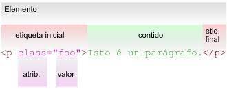

Primer sitio de trabajo, Etiquetas basicas de HTML, atributos y sus valores
Etiquetas basicas de HTML
El lenguaje HMTL es aquel lenguaje con el cual se escriben las paginas web, en otras palabras, es el texto en las paginas el cual está marcado con códigos, los cuales se emplean para dar instrucciones al navegador web, de este modo estos códigos determinan la forma de como mostrar la información que tamaños, letras, colores, enlaces, etc. El hipertexto HTML es el lenguaje informático que conforma la mayoría de las páginas web, por ende, los usuarios pueden crear estructurar enlaces y párrafos implementando etiquetas, atributos y elementos.
Las etiquetas de HTML funcionan de la siguiente manera la gran mayoría de paginas web contienen varias paginas HTML, una de inicio, producto, etc. Estas a su vez disponen de diferentes etiquetas y atributos que son los componentes básicos de una página web.
Las etiquetas más usadas para la creación de cualquier documento HTML son:
body:Que se implementa para el contenido
a: Esta etiqueta se implementa para enlaces
strong: Implementada para poner el texto en negrilla
br: Usada para dar saltos en línea
head: información sobre el documento
h1, h2 ….. h6: Implementada para títulos dentro del contenido
div: Utilizada para la división del contenido
p: Etiqueta implementada para párrafos
ul: Implementada para listas desordenadas
li: Etiqueta implementada para elementos
ol: Implementada para listas ordenadas
img: Esta etiqueta se utiliza para añadir imágenes dentro del documento

Atributos y Valores
Los elementos de HTML tienen atributos, estos son valores adicionales que configuran elementos o se ajustan para cumplir con los criterios de los usuarios, Estos atributos de HTML son palabras específicas que se implementan dentro de la etiqueta de apertura, estos son en parte un modificador de elementos de HTML.
Los atributos sirven dentro de las etiquetas para controlar mejor las características de nuestros elementos de HTML, estos atributos nos ayudan a personalizar y agregar ciertos aspectos en nuestras páginas web, se consideran como una información adicional que se pone en la etiqueta de apertura, esto con el fin de complementar la información al elemento de HTML.
Algunos de los atributos más usados en HTML:
Id =” ”: Se implementa para identificar un elemento único.
class =” ”: Es un identificador múltiple.
align =” ”: Este se utiliza para la alineación de contenido.
border =” ”: Implementado para darle borde al contenido.
style =” ”: Usado para darle un estilo al contenido.
background-color =” ”: Peste atributo se utiliza para el color de fondo.
href =” ”: Atributo implementado para enlaces HTML.
height =” ”: Usado para determinar altura.
width =” ”: Implementado para determinar ancho.
src=“ ”: Atributo para las imágenes.
Cuando se implementa un atributo en HTML se tiene que especificar su valor y este representaría una cantidad o característica especifica o en qué medida se ejecutaría dicho atributo. Este valor se representa entre comillas después del signo (=), puede haber una cantidad de valores disponibles dependiendo del atributo.
Atributos y sus valores
id: su valor puede ser cualquier palabra que sirve para identificar un elemento.
align: alineación, sus valores pueden ser: center, right, left, justify.
bgcolor: Para color de fondo para ciertos elementos como body, el valor puede ser cualquier color en formato palabra, hexadecimal, RGB, etc. ejemplo: red, green, #ff0000, etc.
width: define el ancho y su valor puede ser cualquier medida con su respectiva unidad de medida.
border-style: estilo de borde, los valores disponibles son: solid, dotted, dashed, double, etc.
href: para enlaces su valor puede ser la dirección de un carpeta o URL.
height: para definir altura, su valor puede ser una medida con su unidad de medida, por ejemplo: 10px, 12em, 100%.
Desarrolladores web. (2019). Atributos en HTML – qué son, para qué sirven y cuáles son. Recuperado de. https://desarrolladoresweb.org/html/atributos-html/#Valor_de_un_atributo
Xavier Idevik.(2021).¿Qué es una etiqueta HTML y cuáles son las más importantes?. Recuperado de. https://www.iebschool.com/blog/que-es-etiqueta-html-analitica-usabilidad/